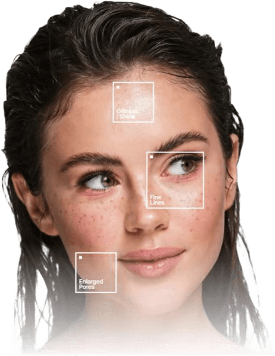

Rostro
Conocer tu forma facial ayuda a elegir escotes y accesorios que equilibran tus rasgos.
Analizamos la forma de tu rostro y el color de tu piel para darte una guía de estilo hecha para ti.
Comenzar análisis
Conocer tu forma facial ayuda a elegir escotes y accesorios que equilibran tus rasgos.
Los colores correctos iluminan tu piel y ayudan a que luzcas descansada.
Labial, rubor y sombras en tonos que armonizan con tu piel natural.
Una guía clara de qué usar y qué evitar, con la explicación de cada recomendación.
Sube una foto y la analizamos en tu navegador para personalizar tus recomendaciones.
JPG, PNG o WEBP · máximo 10 MB
Tu foto se procesa en tu dispositivo y no se envía a ningún servidor.